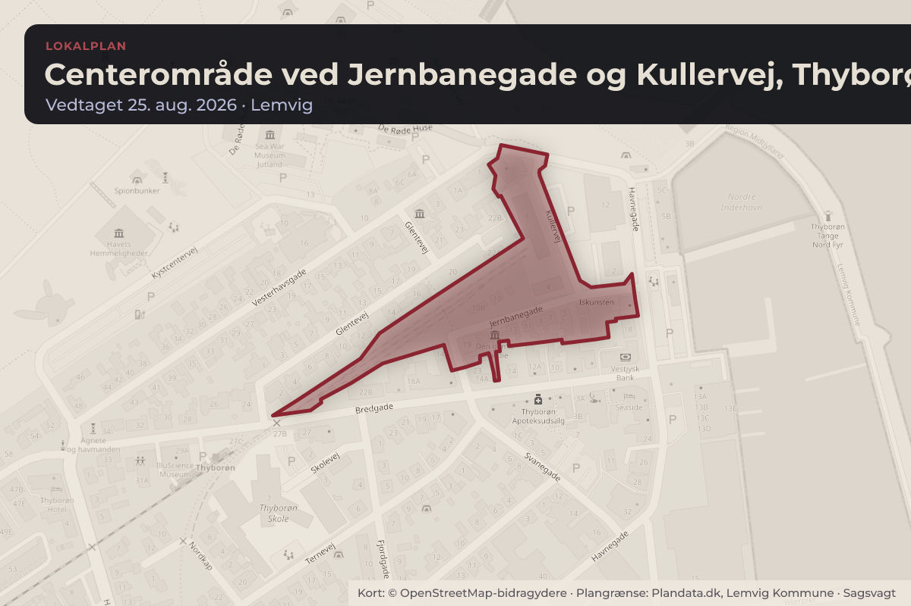
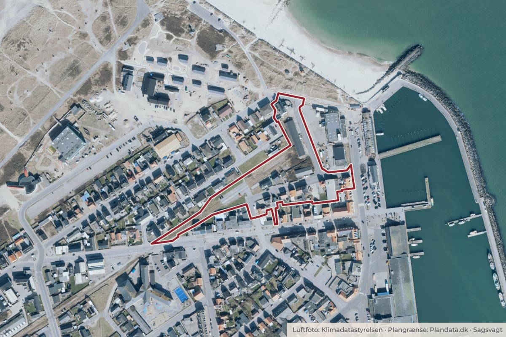

Besluttet 17. august, Økonomi- og Erhvervsudvalget, Lemvig
Endelig vedtagelse af Lokalplan 248 - Centerområde i Thyborøn ved Jernbanegade og Kullervej
Lokalplan 248 - Centerområde i Thyborøn ved Jernbanegade og Kullervej har været udsendt i 8-ugers høring. Der er ikke indkommet indsigelser til planen. Med en enkelt justering af bestemmelsen i § 6.2 indstilles det, at Lokalplan 248 vedtages endeligt.

Kort: © OpenStreetMap-bidragydere. Plangrænse: Plandata.dk, Lemvig Kommune.

Har du et billede fra Centerområde ved Jernbanegade og Kullervej, Thyborøn? Send det til os
Kort fortalt
- Hvem
- Økonomi- og Erhvervsudvalget, Lemvig Kommune
- Hvornår
- Mandag 17. august 2026
- Status
- Besluttet. Indstillingen anbefalet.
Læs hele sagen Kommunens egen tekst
Indstilling
At Lokalplan 248 - Centerområde i Thyborøn ved Jernbanegade og Kullervej
vedtages endeligt med en mindre justering af bestemmelsen i § 6.2, som tilføjes:
"bortset fra mindre skure og lignende"
Beslutning fra Teknik- og Miljøudvalget, den 10. august 2026, punkt 2:
Indstilling anbefalet. Trine Rønn deltog ikke i sagens behandling.
Sagen afgøres endeligt af
Kommunalbestyrelsen via Teknik- og Miljøudvalget og Økonomi- og Erhvervsudvalget
Sagsfremstilling
Direktør for Teknik og Miljø Claus Borg deltager i mødet kl. 14.45.
Kommunalbestyrelsen vedtog på møde den 27. maj 2026 ( sag nr. 3) forslag til Lokalplan 248 Centerområde i Thyborøn ved Jernbanegade og Kullervej og at sagen udsendes i 8-ugers
offentlig høring, med frist for fremsendelse af bemærkninger og indsigelser den 31. juli 2026.
Der er ikke indkommet bemærkninger til planforslaget.
Dog har ejer af 2 boliger i delområde 3 ønsket mulighed for, at der kan opføres et nyt skur i
tilknytning til en af boligerne.
Derfor foreslår administrationen, at bestemmelsen i § 6.2 ændres
Fra: I delområde III må der ikke opføres nye boliger eller laves tilbygninger til de eksisterende
boliger.
Til: I delområde III må der, bortset fra mindre skure og lignende, ikke opføres nye boliger eller
laves tilbygninger til de eksisterende boliger.
Lovgrundlag
Planloven.
Politikker og strategier
Planen understøtter Kommunalbestyrelsens strategi for turisme og handel.
Strategisk-Fysisk Udviklingsplan for Thorsminde-Thyborøn – Implementering og udvidelse.
Planens indsatser er vedtaget som et inspirationskatalog for udviklingen af Thyborøn og
feriehusområderne. Planen med målgrupper og målsætninger er rammen for den fysiske
udvikling. Planen udvides med planlægning af basisfaciliteter, der matcher den løbende vækst,
bl.a. i forhold til parkering, toiletter, vejnet og løbende servicering af offentlige områder langs
hele kysten og i baglandet.
Tidligere politisk behandling
Senest behandlet i Kommunalbestyrelsen den 27. maj 2026 - sag nr. 3.
Beslutning
Indstillingen anbefalet.
Kilde: Lemvig Kommune, Økonomi- og Erhvervsudvalget, referat fra mødet mandag 17. august 2026, punkt 7. Læs den originale sag hos kommunen.